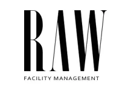
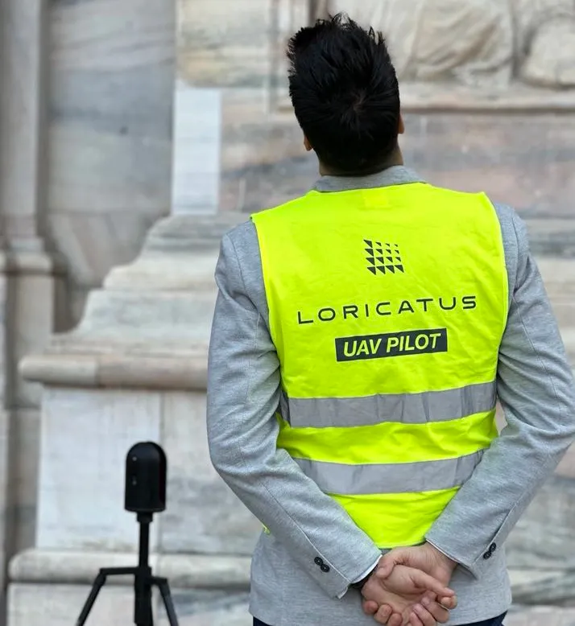
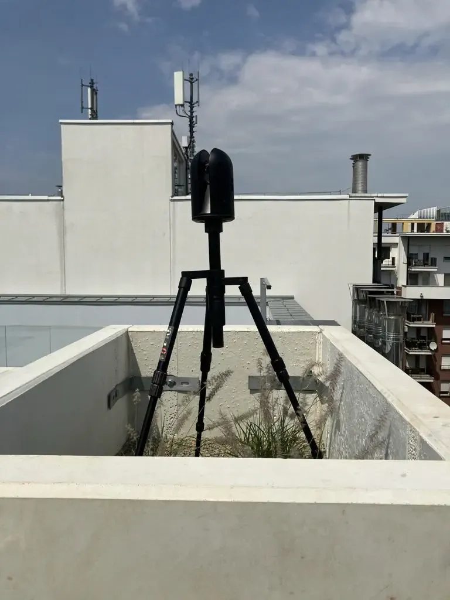

Optimalizálja idejét és erőforrásait modern technológiai megoldásainkkal. Személyre szabott, intelligens 3D felmérési szolgáltatásaink révén maximális pontosságot és hatékonyságot biztosítunk építészeti és mérnöki projektjeihez.
Szakértő ellenőrzés és folyamatos nyomonkövetés az építkezési folyamatok során. Modern technológiákkal biztosítjuk, hogy az épület pontosan a terveknek megfelelően valósuljon meg.
Tudj meg többetKomplex építészeti felmérések és dokumentálás: BorsodCHEM-től a Budavári Hauszmann Programig. Precíz 3D adatgyűjtés és elemzés kihívást jelentő projektekhez, mint a Magyar Zene Háza vagy a Füzéri Vár. Megbízható megoldások bérleményelszámolási vitáktól a műemlékvédelmi feladatokig.
Tudj meg többetFejlett méréstechnikai megoldásainkkal és AI alapú elemzéseinkkel segítünk megelőzni és kezelni a vitás helyzeteket. Objektív adatokkal támasztjuk alá az igazságot, legyen szó kivitelezési hibákról, káreseményekről vagy tervezési kérdésekről. Rendszerünk garantálja a transzparens és hatékony projektvitelt, minimalizálva a műszaki kockázatokat.
Tudj meg többet



Optimalizálja idejét és erőforrásait modern technológiai megoldásainkkal. Személyre szabott, intelligens 3D felmérési szolgáltatásaink révén maximális pontosságot és hatékonyságot biztosítunk építészeti és mérnöki projektjeihez.


A lézerszkennelés valós idejű, nagy sűrűségű pontfelhőt készít az építési területről, így azonnal felismerhetők az eltérések a BIM modellhez képest. A Loricatus csapata ipari lézerszkennerekkel méri fel az épületeket és az infrastruktúrát, hogy Ön mindig a legaktuálisabb adatbázisra támaszkodhasson.
A drónos felmérés több hektáros területeket térképez le percek alatt, szabályos légügyi engedélyezés mellett. A nagyfelbontású ortofotók és videók segítenek a kivitelezési hibák, deformációk és munkaterületi veszélyek feltárásában.

Kihívások, amikkel ügyfeleink hozzánk fordulnak
A mellékes feladatok elvonják az energiát a kreatív munkától. Szükséges a minőségi alkotói idő biztosítása.
Alkotó tervezőként a pontos részletek és magas minőség elengedhetetlen a munkádban.
A partnerek folyamatos megkérdőjelezése és a műszaki összefüggések bizonygatása időigényes.
A jelenlegi adatgyűjtési módszerek költségesek és kockázatosak, megbízható segítségre van szükség.
Nincs szükség komplex technológiai befektetésekre, egyszerű 3D vizualizációs megoldások kellenek.
A BIM követelmények teljesítéséhez megbízható szakértői háttértámogatás szükséges.

Tovább

Tovább

Tovább

Tovább
Tovább

Tovább

Tovább
Tovább
Tovább
Tovább

Tovább
Tovább